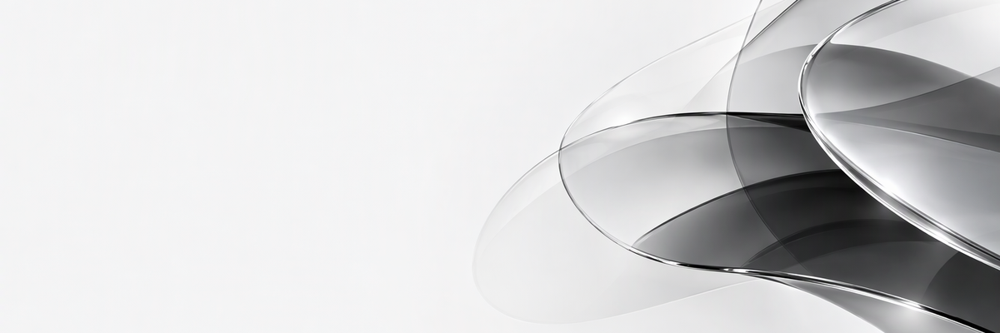
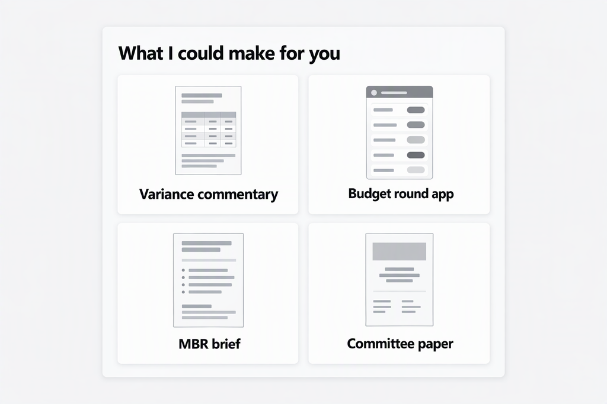
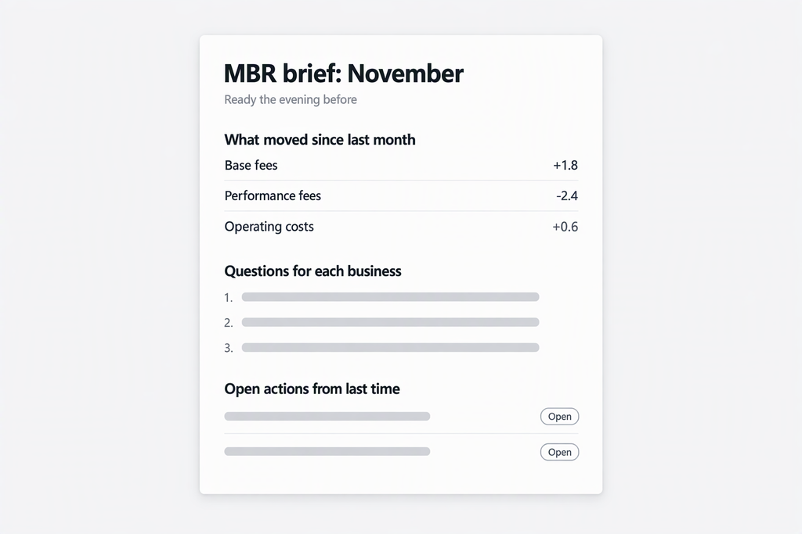
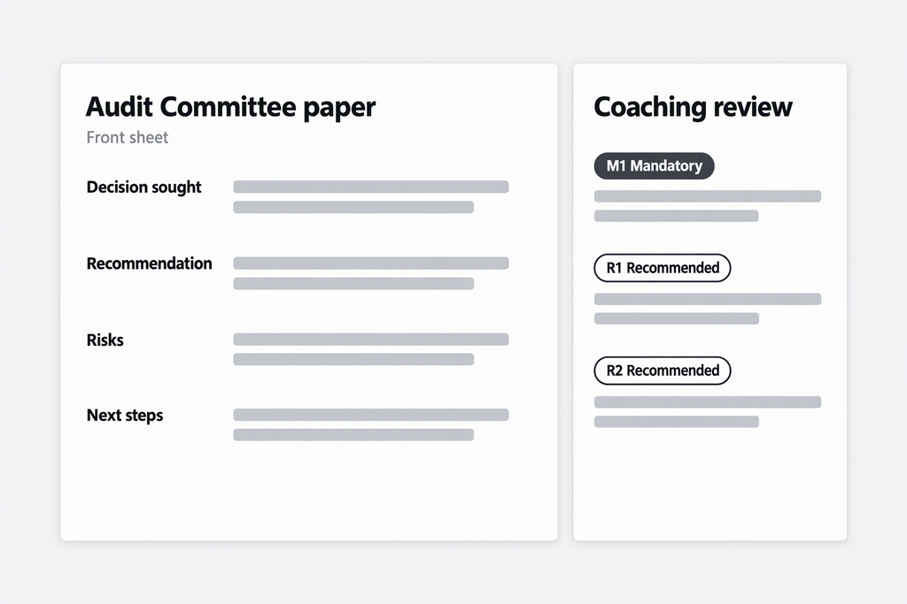

Cowork Cookbook: pictures
Pictures that Launchpad for Cowork shows in its cards. All people, organisations and figures shown are invented.
The plugin icon.
assets/v2/launchpad-for-cowork-icon.png
At the top of the welcome card.
assets/v2/launchpad-welcome-banner-mono.png
What Launchpad could make for you.
assets/v2/launchpad-picture-menu-mono.png
Every line carries an evidence status.
assets/v1/launchpad-variance-commentary-example.png
Replaces a shared tracker and status emails.
assets/v1/launchpad-budget-round-app-mock.png
Ready the evening before the monthly business review.
assets/v2/launchpad-mbr-brief-example.png
A front sheet and a coaching review.
assets/v2/launchpad-committee-paper-example.png
Kept so that older links still work.
assets/v1/launchpad-picture-menu.png
Kept so that older links still work.
assets/v1/launchpad-welcome-banner.png